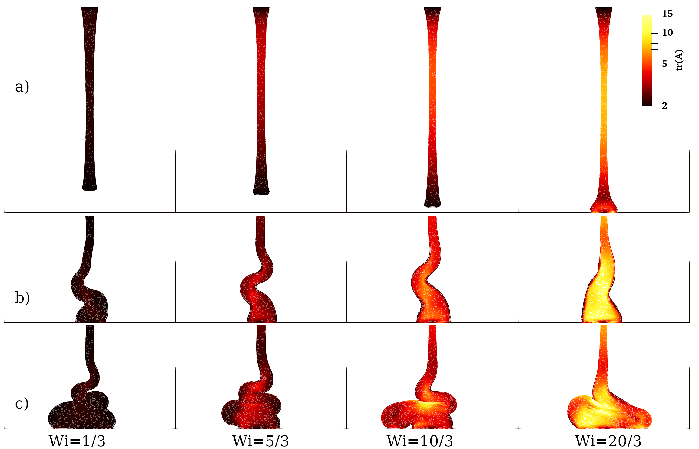
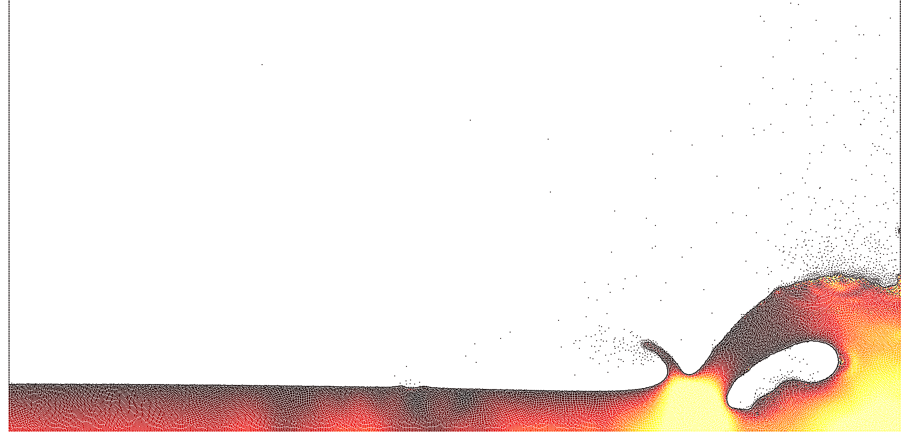

CODES
I have a number of small CFD codes listed below, used primarily for teaching. They are open source and available on Github. All are written in Fortran. For details of the SUNSET code, see here.VEBISPH
 ViscoElastic Boussinesq Incompressible Smoothed Particle Hydrodynamics.This code is based on that developed in [1], which has been extended by several MSc students to include thermal effects via a Boussinesq approximation. It can simulate free-surface and closed domain viscoelastic and Newtonian flows with a range of constitutive models.
- Language: Fortran
- Acceleration: OpenMP
- Compiler: gfortran
- non-standard libraries: None
- Output file format: ascii-->vtk
FLAMEFD
This code is designed for two-dimensional direct numerical simulations (DNS) of flames. It uses eighth-order central finite differences and a third-order explicit Runge-Kutta time-stepping scheme, alongside LABFM-based filters. It has been tested for single-step and multi-step (21step H2 and 25 step CH4) reaction mechanisms. It is not optimised, but is sufficient for simulations for flame-vortex interactions, and should scale reasonably well up to 1000 cores.- Language: Fortran
- Acceleration: OpenMP+MPI
- Compiler: gfortran/mpifort
- non-standard libraries: None
- Output file format: ascii-->vtk
FD2D
This code is designed for two-dimensional simulations of Rayleigh-Benard convection. It uses eighth-order finite differences to discretise the Navier-Stokes equations in vorticity-streamfunction form. The incompressibility constraint is satisfied with a second-order successive over-relaxation (SOR) method. It can simulate both Newtonian flows and inelastic non-Newtonian flows (e.g. Carreau model, power-law fluid).- Language: Fortran
- Acceleration: OpenMP
- Compiler: gfortran
- non-standard libraries: none
- Output file format: ascii-->vtk
BasicSPH
 This SPH code uses a weakly compressible formulation to simulate a two-dimensional dam break problem. It is not remotely optmised, but is roughly the most simple implementation capable of a dam break simulation.- Language: Fortran
- Acceleration: none
- Compiler: gfortran
- non-standard libraries: none
- Output file format: ascii